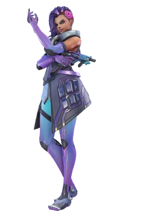
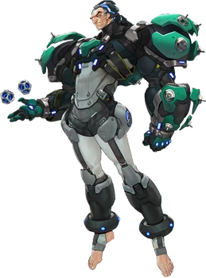
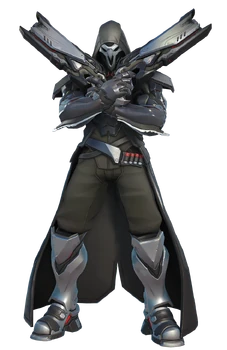

Page d'accueil
Sombra

Olivia Colomar, alias Sombra, est une des pirates informatiques les plus talentueuses du monde,
elle a rejoint la Griffe pour découvrir les personnes qui se cachent derrière un complot d'ampleur mondial.
Ses compétences d'infiltration sont aussi précieuses de par sa capacité à devenir invisible.
Fatale

Amélie Lacroix, alias Fatale, ancienne épouse de Gérard Lacroix, agent d'Overwatch responsable des opérations contre La Griffe.
Amélie subit un reformatage neuronal par La Griffe pour qu'elle assassine son mari. Après ces évènements, elle prit goût au meurtre
et devint une des tireuses d'élite les plus redouté au monde.
Sigma

Dr. Siebren de Kuiper, alias Sigma, un éminent scientifique qui à subit les conséquences de l'échec d'une expérience. Il a acquis la capacité de controler
la gravité au détriment de son équilibre mental. La Griffe l'as récupéré d'une institution gouvernementale et se sert de lui et de ses recherches
à son insu.
Faucheur

Gabriel Reyes, alias Faucheur, un ancien agent d'Overwatch pensé disparu après l'explosion du quartier général d'Overwatch. Il est mystérieusement réapparu
en tant qu'un des agents les plus cruels de La Griffe et est après tous ses anciens camarades d'Overwatch.